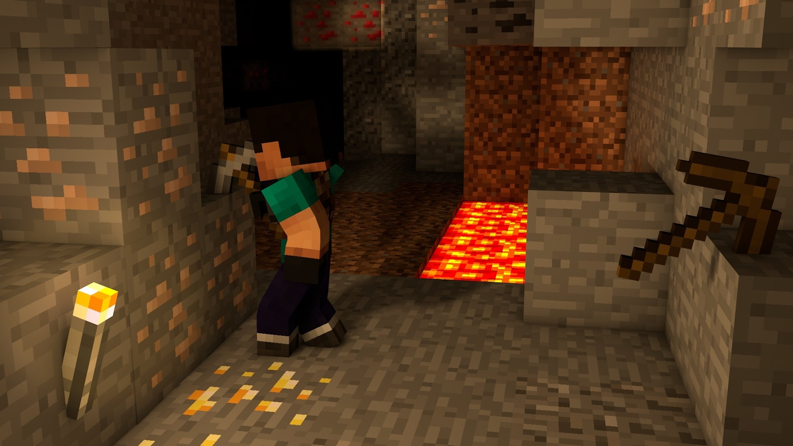

Mining is one of the main aspects of Minecraft and is done to extract ore and other materials mainly from below the surface of the map. These ores include coal, iron, gold, redstone, diamond, lapis lazuli, copper and emerald. Mining can involve digging a hole from the surface or going down through a cave. Mineshafts and ravines create extra areas that may contain resources, since they are usually rich in ores.
